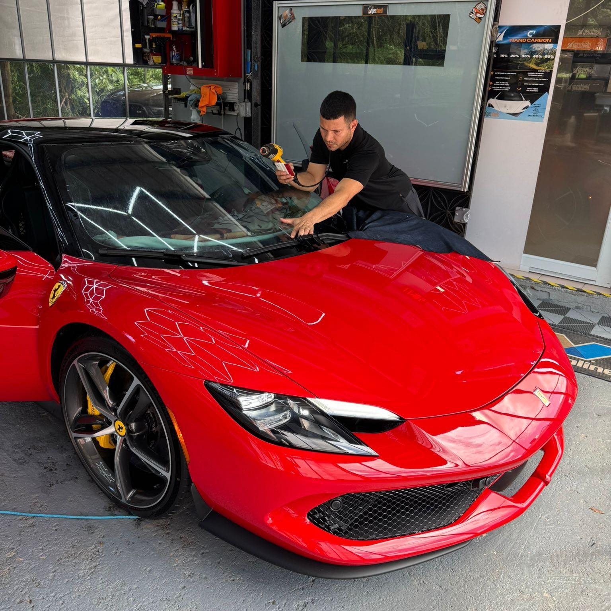
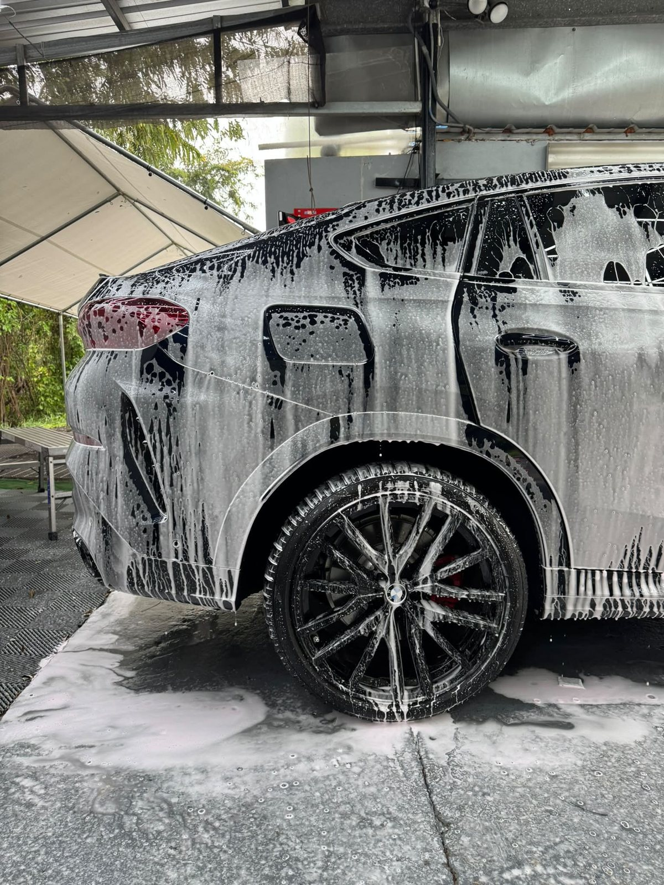
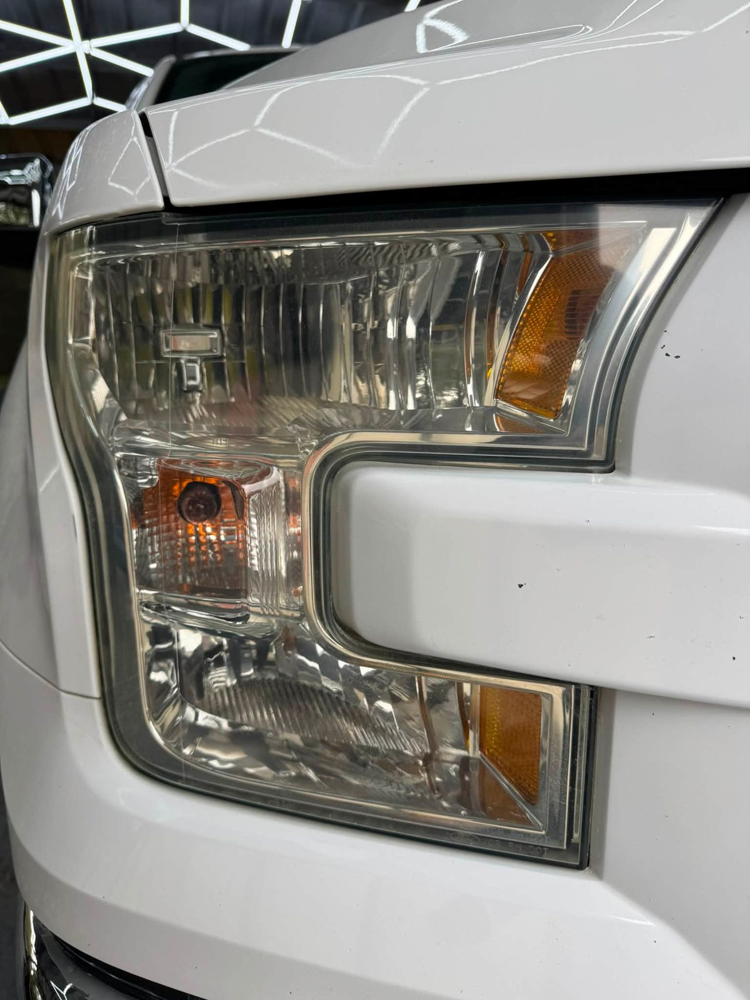
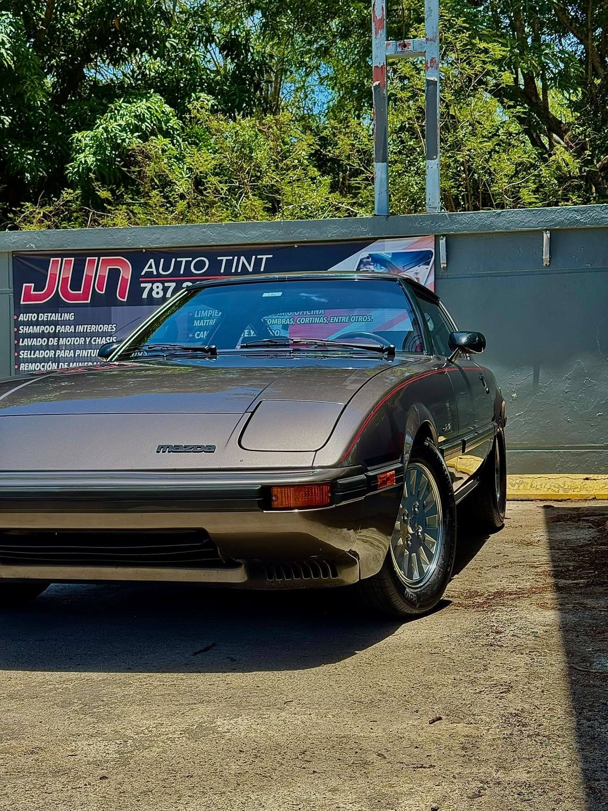
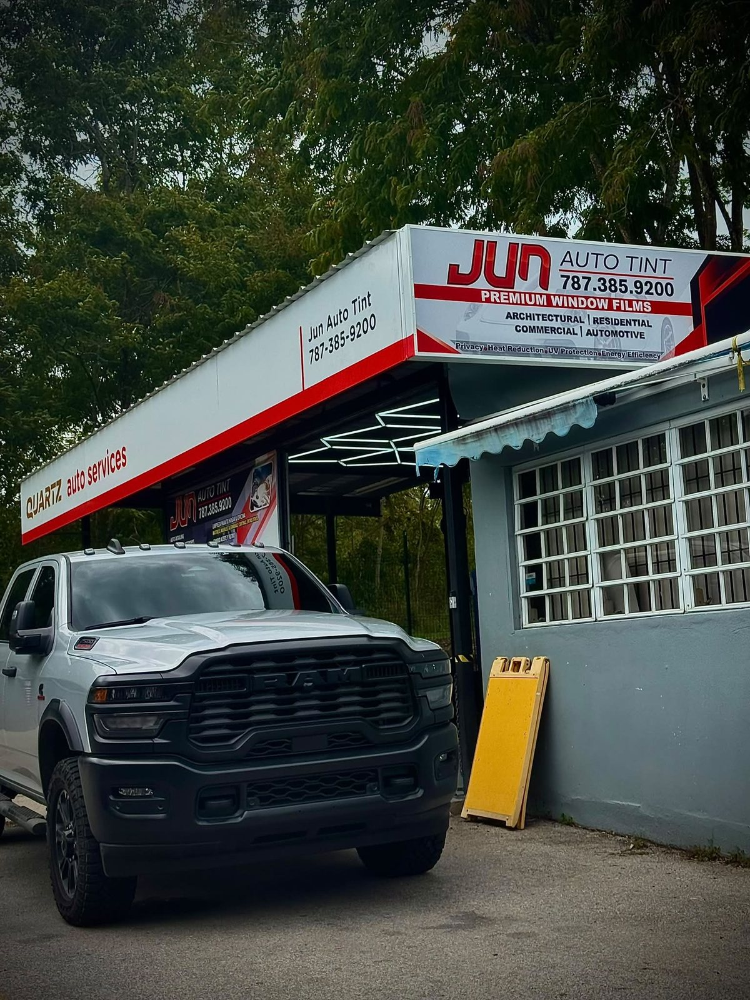
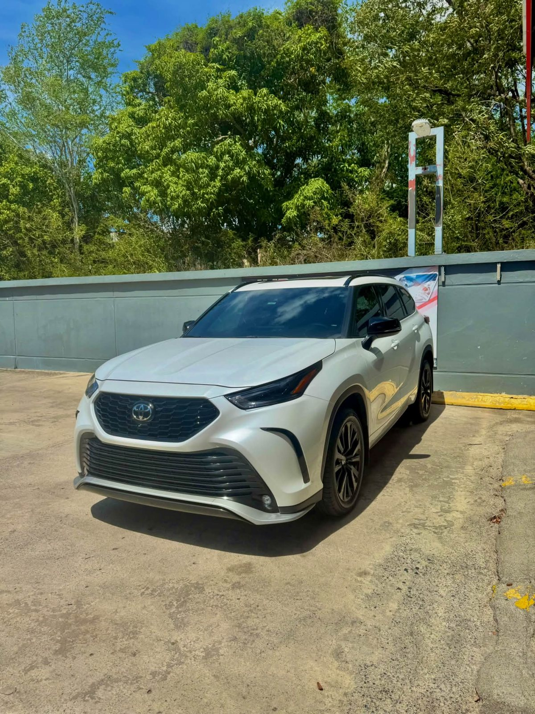
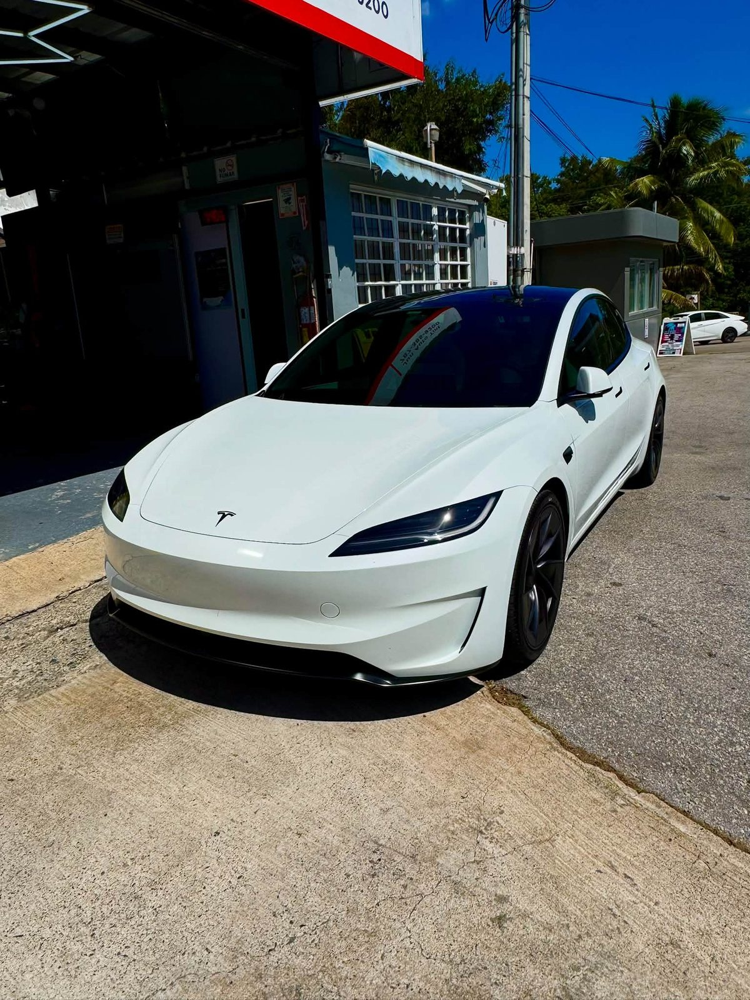
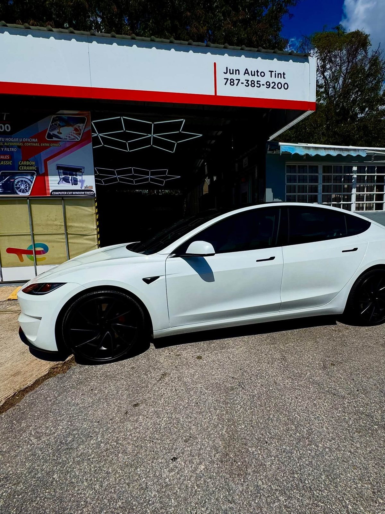

Tintes industriales
Instalaciones de tintes garantizadas para autos. Acabado parejo, sin atajos, y con la garantía que el taller respalda.

Yauco - Trabajos garantizados
Brindando el mejor servicio: instalaciones de tintes garantizadas, detailing, brillo de focos y pulido en Yauco.
(787) 385-9200 - Yauco
Lo que hacemos
Del cristal al brillo completo: esto es lo que se trabaja en Jun Auto Tint, con fotos reales del taller.
Instalaciones de tintes garantizadas para autos. Acabado parejo, sin atajos, y con la garantía que el taller respalda.

Lavado y detalle completo: el vehículo sale limpio de verdad, por fuera y por dentro.

Focos opacos que vuelven a alumbrar: restauración del brillo para seguridad y presencia.

Pulido y brillo que devuelven el color y el espejo a la pintura, incluyendo clásicos que merecen respeto.
Trabajos reales
Fotos reales de Jun Auto Tint en Yauco. Sin stock, sin inventos.






Facil asi
Llegas al local en Carr. #128, Yauco, anexo a la Gasolinera Total y Car Wash. Trabajamos tu vehículo, lo revisamos contigo y sales con el trabajo garantizado.
Jun Auto Tint - Yauco
Además de tintes, el taller trabaja shampoo de interiores, remoción de brea y de manchas de agua en los cristales, lavado de motor y limpieza de muebles del hogar y oficina. También trabajos residenciales y comerciales.
Todo con la misma regla: trabajos garantizados.
Dudas comunes
Sí. Jun Auto Tint anuncia sus instalaciones como trabajos garantizados. Confírmalo al cotizar según el servicio que necesites.
En Hc 2 Box 835, Carr. #128, Yauco, anexo a la Gasolinera Total y Car Wash.
Auto detailing, shampoo de interiores, brillo de focos, remoción de brea, pulido y brillo de pintura, lavado de motor y limpieza de muebles del hogar y oficina.
Por WhatsApp o por teléfono al (787) 385-9200.
Escríbenos ahora y agenda tu instalación garantizada en Jun Auto Tint, Yauco.
Hc 2 Box 835, Carr. #128, anexo Gasolinera Total y Car Wash, Yauco